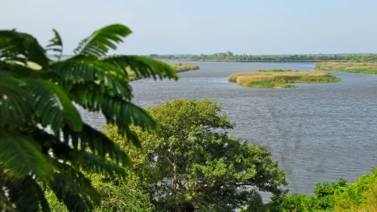
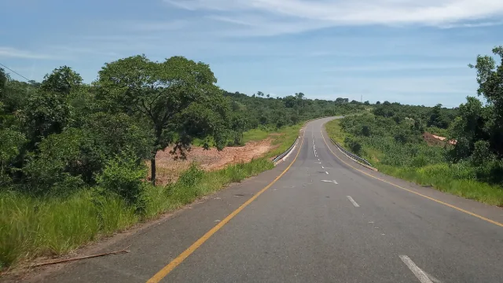
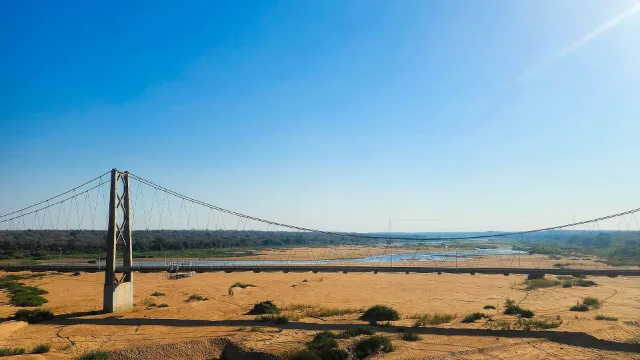
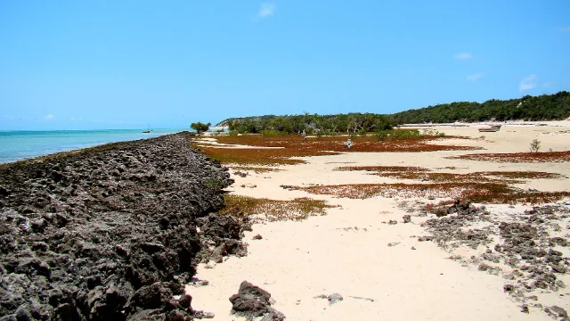
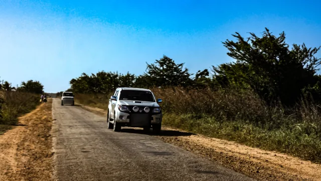
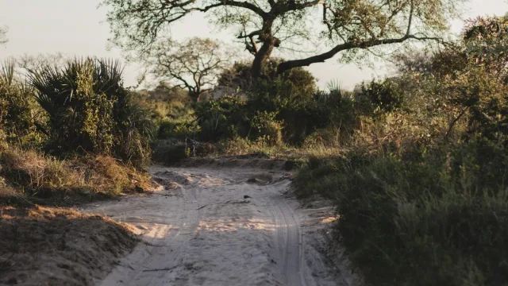

Third-party photographs
The photographs below were obtained from Wikimedia Commons and Unsplash and are used under the licences shown. They are representative images: they were not taken at Enviestudos project sites, and each is labelled as such where it appears on this website.
Each licence applies only to the individual photograph listed. It does not apply to any other content on this website. The use of these photographs does not imply endorsement by the photographers, publishers or any organisation.
Fotografias de terceiros
As fotografias abaixo foram obtidas no Wikimedia Commons e no Unsplash e são utilizadas ao abrigo das licenças indicadas. São imagens ilustrativas: não foram captadas em locais de projectos da Enviestudos e estão identificadas como tal onde aparecem neste website.
Cada licença aplica-se apenas à fotografia indicada e não abrange qualquer outro conteúdo deste website. A utilização destas fotografias não implica qualquer aval por parte dos fotógrafos, editores ou de qualquer organização.

Nkomati (8542099296)
- CreatorAutor
- F Mira
- SourceFonte
- Wikimedia Commons
- LicenceLicença
- CC BY-SA 2.0
- AttributionAtribuição
- “Nkomati (8542099296)” by F Mira, CC BY-SA 2.0, via Wikimedia Commons
- ChangesAlterações
- Cropped to 16:9, resized and converted to WebP. The adapted version is made available under CC BY-SA 2.0.Recortada para 16:9, redimensionada e convertida para WebP. A versão adaptada é disponibilizada sob a licença CC BY-SA 2.0.
- Used onUtilizada em
- Incomati Bridge (Magude) project page and portfolio card. Shown as a representative image: Marracuene is not the Magude bridge site.Página e cartão do projecto da Ponte sobre o Rio Incomati (Magude). Apresentada como imagem ilustrativa: Marracuene não é o local da ponte de Magude.

Road between Green and Blue
- CreatorAutor
- Imran Dada
- SourceFonte
- Wikimedia Commons
- LicenceLicença
- CC BY-SA 4.0
- AttributionAtribuição
- “Road between Green and Blue” by Imran Dada, CC BY-SA 4.0, via Wikimedia Commons
- ChangesAlterações
- Cropped to 16:9, resized and converted to WebP. Cropped to exclude a windscreen reflection. The adapted version is made available under CC BY-SA 4.0.Recortada para 16:9, redimensionada e convertida para WebP. Recortada para excluir um reflexo do pára-brisas. A versão adaptada é disponibilizada sob a licença CC BY-SA 4.0.
- Used onUtilizada em
- EN1 Namacurra–Rio Ligonha project page and portfolio card. Shown as a representative image: not the project road section.Página e cartão do projecto EN1 Namacurra–Rio Ligonha. Apresentada como imagem ilustrativa: não é o troço rodoviário do projecto.

Save River bridge mozambique
- CreatorAutor
- Themisterpaps
- SourceFonte
- Wikimedia Commons
- LicenceLicença
- CC BY-SA 4.0
- AttributionAtribuição
- “Save River bridge mozambique” by Themisterpaps, CC BY-SA 4.0, via Wikimedia Commons
- ChangesAlterações
- Cropped to 16:9, resized and converted to WebP. The adapted version is made available under CC BY-SA 4.0.Recortada para 16:9, redimensionada e convertida para WebP. A versão adaptada é disponibilizada sob a licença CC BY-SA 4.0.
- Used onUtilizada em
- N1 Rio Save–Muxungue project page and portfolio card.Página e cartão do projecto N1 Rio Save–Muxungue.

Bazaruto-Island-2009
- CreatorAutor
- Bjørn Christian Tørrissen
- SourceFonte
- Wikimedia Commons
- LicenceLicença
- CC BY-SA 3.0
- AttributionAtribuição
- “Bazaruto-Island-2009” by Bjørn Christian Tørrissen, CC BY-SA 3.0, via Wikimedia Commons
- ChangesAlterações
- Cropped to 16:9, resized and converted to WebP. The adapted version is made available under CC BY-SA 3.0.Recortada para 16:9, redimensionada e convertida para WebP. A versão adaptada é disponibilizada sob a licença CC BY-SA 3.0.
- Used onUtilizada em
- EN1 Nhachengue–Vilanculos project page and portfolio card.Página e cartão do projecto EN1 Nhachengue–Vilanculos.

Mozambique 142
- CreatorAutor
- Edward Middleton
- SourceFonte
- Wikimedia Commons
- LicenceLicença
- CC BY-SA 4.0
- AttributionAtribuição
- “Mozambique 142” by Edward Middleton, CC BY-SA 4.0, via Wikimedia Commons
- ChangesAlterações
- Cropped to 16:9, resized and converted to WebP. Vehicle number plates blurred. The adapted version is made available under CC BY-SA 4.0.Recortada para 16:9, redimensionada e convertida para WebP. Matrículas das viaturas desfocadas. A versão adaptada é disponibilizada sob a licença CC BY-SA 4.0.
- Used onUtilizada em
- Roads N103 & R657 project page and portfolio card.Página e cartão do projecto Estradas N103 e R657.

a dirt road with trees on either side of it
- CreatorAutor
- Zeke Tucker
- SourceFonte
- Unsplash
- LicenceLicença
- Unsplash License
- AttributionAtribuição
- Not required by the licence; credited voluntarily: Photo by Zeke Tucker on Unsplash.Não exigida pela licença; crédito atribuído voluntariamente: Foto de Zeke Tucker no Unsplash.
- ChangesAlterações
- Cropped from portrait to 16:9, resized and converted to WebP.Recortada do formato vertical para 16:9, redimensionada e convertida para WebP.
- Used onUtilizada em
- N14 Marrupa–Ruaça EMP Review project page and portfolio card.Página e cartão do projecto de Revisão do PGA da N14 Marrupa–Ruaça.
Other images on this website
Enviestudos photographs – photographs supplied by Enviestudos, including drone and public consultation photographs. Where a photograph is not confirmed as showing the project on the page, it is labelled as a representative image.
AI-generated illustrations – six conceptual images were created using artificial intelligence. On the website they carry the label “Illustrative image”, and each caption states: “Illustrative image created using AI. It is not a photograph of the actual project site.” They are not photographs of any project, location or Enviestudos personnel.
- Water pipeline installation – Nacala water supply project page and card
- Elevated water tank – AIAS water supply project page and card
- Site restoration – Milange–Mocuba decommissioning project page and card
- Road works supervision – Milange–Mocuba Lot 2 project page and card
- Water quality sampling – Environmental Supervision & Monitoring service page
- Site inspection – Environmental Audits service page
Outras imagens deste website
Fotografias da Enviestudos – fotografias fornecidas pela Enviestudos, incluindo fotografias aéreas (drone) e de consultas públicas. Quando não está confirmado que uma fotografia mostra o projecto da página, esta é identificada como imagem ilustrativa.
Ilustrações geradas por IA – seis imagens conceptuais foram criadas com recurso a inteligência artificial. No website têm a etiqueta “Imagem ilustrativa” e cada legenda indica: “Imagem ilustrativa criada com recurso a inteligência artificial. Não é uma fotografia do local real do projecto.” Não são fotografias de qualquer projecto, local ou pessoal da Enviestudos.
- Instalação de conduta de água – página e cartão do projecto de abastecimento de água de Nacala
- Reservatório de água elevado – página e cartão do projecto de abastecimento de água do AIAS
- Recuperação de local – página e cartão do projecto de desactivação Milange–Mocuba
- Supervisão de obras rodoviárias – página e cartão do projecto Milange–Mocuba Lote 2
- Amostragem da qualidade da água – página do serviço de Supervisão e Monitorização Ambiental
- Inspecção de local – página do serviço de Auditorias Ambientais